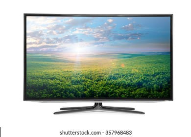

Television – The most significant invention by man was designed and developed by J.L Baird in 1927. It is a smart appliance that is used for viewing content all around the globe. The basic functioning of a TV is through the radio waves that are transmitted from the sender. The waves are reflects the receiver’s antenna, and then we can view our content. It has definitely made our lives better by providing us with a great mode of entertainment.
Earlier people used to resort to magazines and books as the sole source of entertainment. However, now, there are hundreds of options. There are different channels on TV that are run on different frequencies. The earlier Televisions were in monochrome, but with advancements in technology, TVs started coming in coloured versions. The main purpose of the TV was to bring the world closer. While it became possible to a great extent. However, it has also been responsible for the segregation of societal bonds. People prefer to stay and home than attend social obligations.